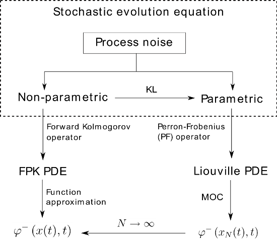

Uncertainty Propagation in Nonlinear Systems
Mars entry-descent-landing
Shown above are landing ellipses for all past Mars missions, plotted with same center and same inclination, for comaprison purposes. The axes are in Km, showing that historically, the landing footprint uncertainty has been rather large. Computational analysis of landing footprints are usually done using resource-expensive Monte Carlo simulations. We showed that the method-of-characteristics based solution of Liouville equation, is a tractable and accurate alternative to Monte Carlo. Shown below are the time evolution of latitude-longitude bivariate marginals, using same number of samples for Monte Carlo (left) and the propsed method (right), in the presence of initial condition uncertainties.
Transfer Operator Methods for Nonlinear Estimation
|  |  |
The block diagram on above left shows how the method-of-characteristics based computation of transfer operators, can be extended to account process noise. In the estimation setting, this results an accurate computation of the prior, that greatly enhances the accuracy of nonlinear filtering algorithm. The plot on above right shows that for linear Gaussian case, the true (Kalman) posterior remains closer to the posterior predicted by our algorithm (solid line), compared to that predicted by particle filter (dashed line). This is shown to be true for nonlinear non-Gaussian systems as well.